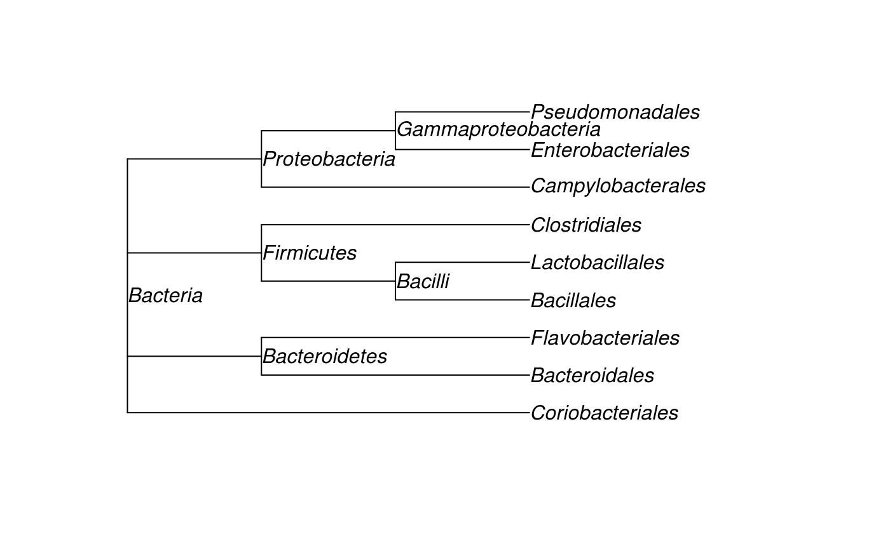

The goal of yatah is to manage taxonomy when lineages are described with strings and ranks separated with special patterns like |*__ or ;*__.
For instance, the well-known Escherichia coli could be coded as k__Bacteria|p__Proteobacteria|c__Gammaproteobacteria|o__Enterobacteriales|f__Enterobacteriaceae|g__Escherichia|s__Escherichia_coli.
Installation
You can install the development version from GitHub with:
# install.packages("remotes") remotes::install_github("abichat/yatah")
Example
library(yatah)
lineages <- c( "k__Bacteria|p__Actinobacteria|c__Actinobacteria|o__Coriobacteriales", "k__Bacteria|p__Bacteroidetes|c__Bacteroidia|o__Bacteroidales", "k__Bacteria|p__Bacteroidetes|c__Flavobacteriia|o__Flavobacteriales", "k__Bacteria|p__Firmicutes|c__Bacilli|o__Bacillales", "k__Bacteria|p__Firmicutes|c__Bacilli|o__Lactobacillales", "k__Bacteria|p__Firmicutes|c__Clostridia|o__Clostridiales", "k__Bacteria|p__Proteobacteria|c__Epsilonproteobacteria|o__Campylobacterales", "k__Bacteria|p__Proteobacteria|c__Gammaproteobacteria|o__Enterobacteriales", "k__Bacteria|p__Proteobacteria|c__Gammaproteobacteria|o__Pseudomonadales" )
-
is_rank()checks if the lineages are of the desired rank.
is_rank(lineages, rank = "order") #> [1] TRUE TRUE TRUE TRUE TRUE TRUE TRUE TRUE TRUE is_rank(lineages, rank = "species") #> [1] FALSE FALSE FALSE FALSE FALSE FALSE FALSE FALSE FALSE
-
is_clade()checks if the lineages belong to the desired clade.
is_clade(lineages, clade = "Proteobacteria", rank = "phylum") #> [1] FALSE FALSE FALSE FALSE FALSE FALSE TRUE TRUE TRUE
-
last_clade()extracts the last clade of the lineages.
last_clade(lineages) #> [1] "Coriobacteriales" "Bacteroidales" "Flavobacteriales" "Bacillales" "Lactobacillales" #> [6] "Clostridiales" "Campylobacterales" "Enterobacteriales" "Pseudomonadales"
-
all_clades()extracts all clades of the lineages.
all_clades(lineages, simplify = TRUE) #> [1] "Actinobacteria" "Actinobacteria" "Bacillales" "Bacilli" #> [5] "Bacteria" "Bacteroidales" "Bacteroidetes" "Bacteroidia" #> [9] "Campylobacterales" "Clostridia" "Clostridiales" "Coriobacteriales" #> [13] "Enterobacteriales" "Epsilonproteobacteria" "Firmicutes" "Flavobacteriales" #> [17] "Flavobacteriia" "Gammaproteobacteria" "Lactobacillales" "Proteobacteria" #> [21] "Pseudomonadales"
-
taxtable()computes the taxonomic table corresponding to the lineages.
table <- taxtable(lineages) table #> kingdom phylum class order #> 1 Bacteria Actinobacteria Actinobacteria Coriobacteriales #> 2 Bacteria Bacteroidetes Bacteroidia Bacteroidales #> 3 Bacteria Bacteroidetes Flavobacteriia Flavobacteriales #> 4 Bacteria Firmicutes Bacilli Bacillales #> 5 Bacteria Firmicutes Bacilli Lactobacillales #> 6 Bacteria Firmicutes Clostridia Clostridiales #> 7 Bacteria Proteobacteria Epsilonproteobacteria Campylobacterales #> 8 Bacteria Proteobacteria Gammaproteobacteria Enterobacteriales #> 9 Bacteria Proteobacteria Gammaproteobacteria Pseudomonadales
-
taxtree()computes the taxonomic tree (formatphylo) from a taxonomic table.
tree <- taxtree(table) tree #> #> Phylogenetic tree with 9 tips and 6 internal nodes. #> #> Tip labels: #> Coriobacteriales, Bacteroidales, Flavobacteriales, Bacillales, Lactobacillales, Clostridiales, ... #> Node labels: #> [1] "Bacteria" "Bacteroidetes" "Firmicutes" "Bacilli" "Proteobacteria" #> [6] "Gammaproteobacteria" #> #> Rooted; includes branch lengths. plot(tree, show.node.label = TRUE)

Separator
If you want to change the default separator from | to, e.g., ;, use options(yatah_sep = ";"). Reset it with options(yatah_sep = "\\|").